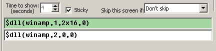
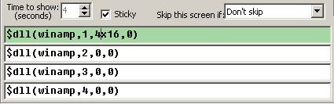

Winamp Spectrum Analyzer Plugin for LCD Smartie
[I need some pictures of this plugin in use!]
FAST START GUIDE
If you hate reading instructions then here's the fast start guide:
- Download zip file
- Exit Smartie
- Extract winamp.dll to smartie's plugins subdirectory
- Extract winamp_lcdsmartie.dll to **winamp's** plugins subdirectory
- Extract config-winamp.ini to smartie's top directory
- Backup the existing config.ini to config.ini.bak
- Rename config-winamp.ini to config.ini
- Start Smartie, see demo screens
- Start Winamp and start the winamp plugin "Spectrum Analyser for LCDSmartie" (press shift-cntrl-k).
- Edit/Copy demo screens
Introduction
This is a plugin that makes it possible to display a winamp spectrum analyzer. Basic use allows standard spectrum graphs of any size to be displayed on your display, advance use allows tiny graphs and many other options.
Limitations
This plugin redefines the custom characters, so only one type of graph can be on the display at once (i.e. you can have two or more graphs but they must use the same barstyle and direction). [Except, there can only be one "Tiny graphs" at a time on screen].
Download
Winamp Plugin Alpha 2 can be downloaded here.
Install
- To install this plugin copy the winamp.dll into the plugins directory of LCD Smartie. [Only the 5.3 beta 3 and above builds are supported.]
- Also copy the winamp_lcdsmartie.dll to winamp's plugin directory (usually something like: C:\Program Files\Winamp\Plugins).
The zip file also includes a config-winamp.ini file which shows how the plugin can be used - backup your config.ini file before renaming this as config.ini.
Basic Use
To use the plugin you will need to insert commands into the your screens - please ensure that all lines have a consistant scroll setting (i.e. all on or all off)!
- Defining the size of the graph: $dll(winamp,1,[height]x[width],0) - this will create a spectrum graph that is [height] high and [width] wide, it will also display the top line of the spectrum graph. Example: $dll(winamp,1,2x20,0)
- (only needed if graph is higher than 1 line) Displaying line 2 of the spectrum graph: $dll(winamp,2,0,0)
- (only needed if graph is higher than 2 lines) Displaying line 3 of the spectrum graph: $dll(winamp,3,0,0)
- (only needed if graph is higher than 3 lines) Displaying line 4 of the spectrum graph: $dll(winamp,4,0,0)
On a 2 line display, the lines entered into smartie will look something like this:
On a 4 line display, the lines entered into smartie will look something like this:
You will also want to change your refresh interval (on Screens page) and dll check interval (on Misc tab) rate as low as possible (12 is perfect, 25 is v.good, 75 fair...). Some displays (9600 baud and below) may not be able to handle the high volume of information - in this case raise the intervals. [NB: There is no need to raise the Scrolling interval! If you find scrolling speeds up as you lower the refresh interval, then you should raise the scroll interval.]
You will need to start the winamp plugin "Spectrum Analyser for LCDSmartie" (in winamp, press shift-cntrl-k).
Tips
- Both refresh interval and dll check interval must be low, otherwise the graph will be choppy. But there's no point going lower than 12.
- CPU load of winamp and LCD Smartie can be reduced by minimising their windows.
- Raising the process prority of LCD Smartie (using task manager) to "Above average" or "High" (but never "real time") will help avoid choppyness when other programs are using the cpu.
- You can cause the plugin to auto run by selecting the winamp option 'Auto execute visualization plugin on playback' which can be found in Perferences->Plugins
- UNINSTALL any winamp plugins that access the your display (lcd/vfd) - such as 'lcd plugin'. Otherwise they will interfer with the LCD smartie plugin (i.e. multiple plugins will be trying to control the same display!)
- WinAmp can also play movies. The plugin will work with movies too!
Advance Use
The full format of function 1 is: $dll(winamp,1,[height]x[width],[options])
[options] takes the form: Direction#BarStyle#SpectrumOpts#max#fallSpeed
Where:
- Direction is one of: d, u, l, r [for down/up/left/right]. [default: u]
- BarStyle selects the custom characters to use. 0 means no custom characters (so you can define your own), 1 means a solid bar, 99 is for "Tiny graphs", etc. The full list of styles is at the end of this page. [default: 1]
- SpectrumOpts - consists of the letters WFL, where W is adjust spectrum to use 'A' Weighting (to make it more consistant with our hearing), F is to use a slower fallback (slow down how fast a peak can fall), L is use linear frequency scale. To disable an option use the lower case version of the letter, so 'l' is non-linear frequency scaling. Default: WFl.
- max - used for scaling spectrum. [default: 80]
- fallSpeed - if fallback is selected in SpectrumOpts then this defines how fast it can fall. [lower is slower] Default: 200.
All options are optional the order must be maintained - so to leave BarStyle out, you must also leave out SpectrumOpts, max and fallspeed.
Examples:
- $dll(winamp,1,2x16,u#1#WFl#40#15)
- $dll(winamp,1,2x16,u#1#WFl#40)
- $dll(winamp,1,2x16,u#1#WFl)
- $dll(winamp,1,2x16,u#1#wfL)
- $dll(winamp,1,2x16,u#1)
- $dll(winamp,1,2x16,u)
- $dll(winamp,1,2x16,0)
Tiny Spectrum Graphs
When a barStyle of 99 or above is used then a tiny graph will be produced, where each bar is only 1 pixel wide. The graph can be up to 8 characters wide and only 1 character high (so, 1x8 or less).
Users with Crystalfontz displays that are gapless between character cells (i.e. 631, 632, 634) can use a barStyle of 100 to get a gapless graph!
NB: Only directions up and down are supported with tiny graphs.
Here is the full list of Tiny graph styles:
- 99 - a normal tiny graph. [Uses characters of 5 by 8 pixels].
- 100 - Crystalfontz special! Produces gapless graphs on supported displays. [Uses characters of 6 by 8 pixels].
- 101 - Crystalfontz special! As 100, but leave bottom pixels empty (so to leave a horizontal gap on gapless screens, such as the 631). [Uses characters of 6 by 7 pixels].
- 102 - As 99 but leave bottom pixels empty. Useful for displays where the bottom line is a solid bar rather than pixels (badly implemented HD44780 lcds). [Uses characters of 5 by 7 pixels].
Bar Styles
For Tiny graphs styles see Tiny graphs section.
The following styles are defined:
- 0 - none; define your own characters.
- 1 - solid.
- 2 - Crystalfontz special! Solid and gapless on supported displays.
- 3 - Crystalfontz special! As 2, but leaves bottom row empty (so to leave a horizontal gap on gapless displays).
- 4 - Solid but leaves bottom row empty . This is useful on displays where the bottom row is a solid bar rather than pixels (badly implemented HD44780 lcds).
- 5 - Thin bars.
- 9 - Outlined bars.